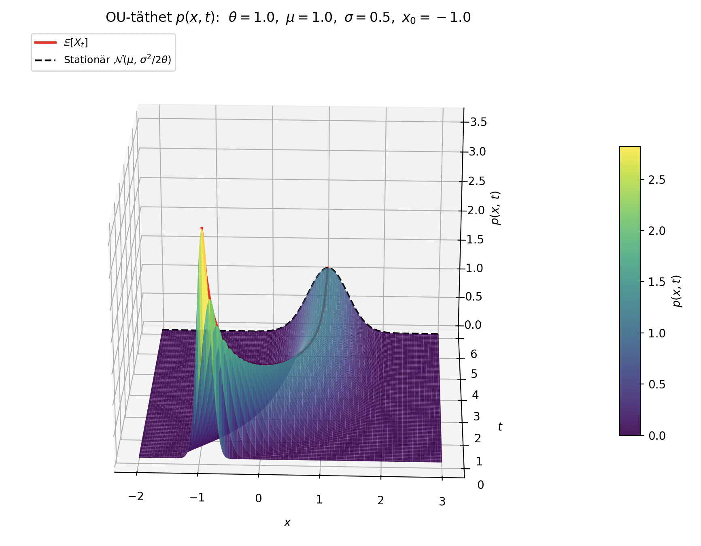
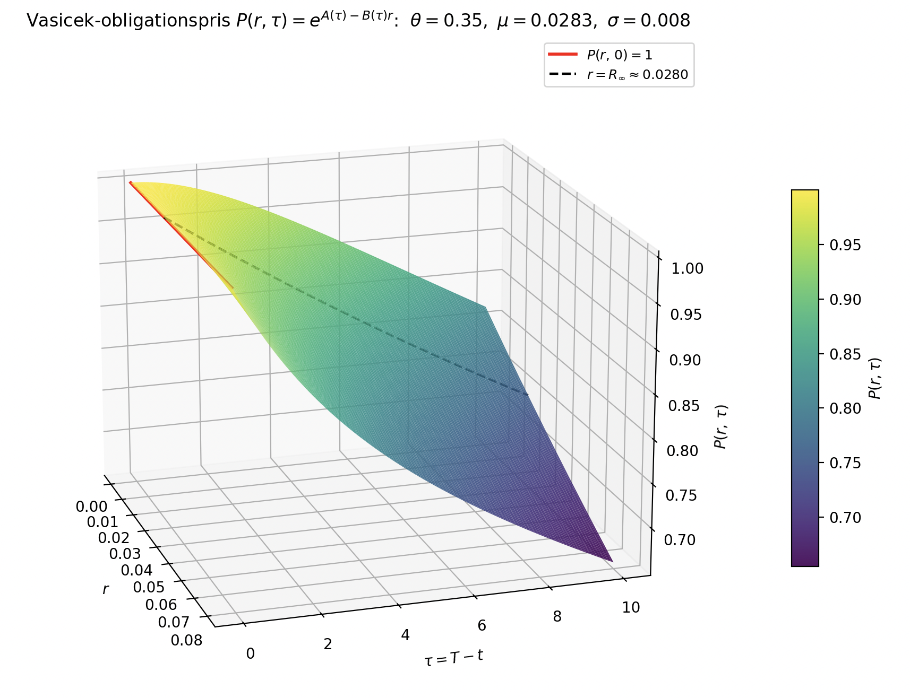
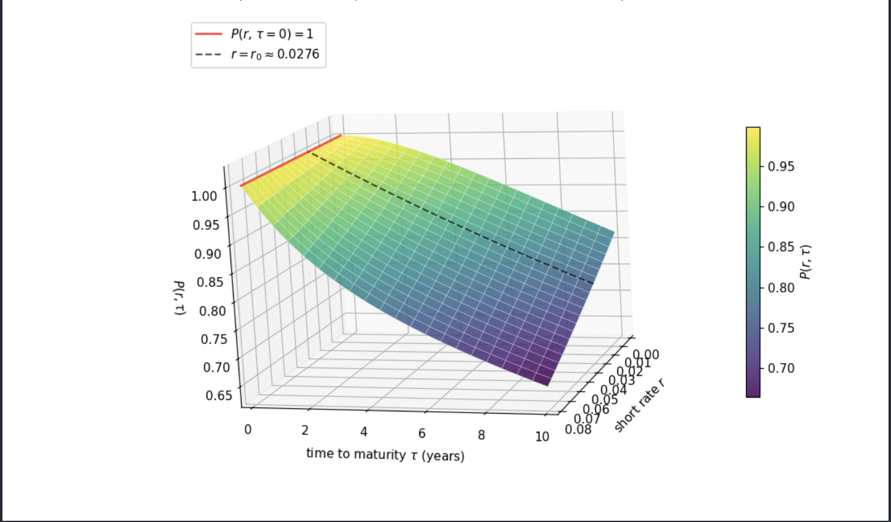
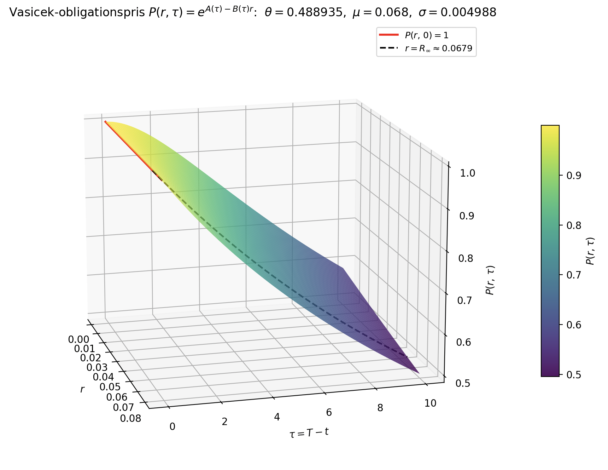

Ornstein–Uhlenbeck-processen
Analytisk lösning och Vasicek-modellen
KTH Royal Institute of Technology · Vårterminen 2026
Inom fysik och finansiell matematik används stokastiska differentialekvationer (SDE:er) för att beskriva storheter som utvecklas slumpmässigt över tid. En SDE kombinerar en deterministisk driftterm med en stokastisk diffusionsterm driven av en Brownsk rörelse, och utgör därmed ett naturligt ramverk för att modellera system med inneboende osäkerhet.
Ornstein–Uhlenbeck-processen introducerades 1930 av Leonard Ornstein och George Uhlenbeck för att modellera hastigheten hos en partikel som påverkas av friktion och slumpmässiga kollisioner — ett problem inom statistisk mekanik känt som Brownsk rörelse med friktion. Processens centrala egenskap är medelvärdesåtergång: en återställande kraft drar systemet mot ett långsiktigt jämviktsläge, vilket gör den distinkt från en vanlig slumpvandring.
OU-processen är ett av få stokastiska system med en fullständig analytisk lösning, vilket gör den till ett naturligt referensfall för att validera numeriska metoder. I detta projekt löser vi den tillhörande Fokker–Planck-ekvationen numeriskt med finita differenser och jämför resultatet med den exakta lösningen.
Som finansiell tillämpning studerar vi Vasicek-modellen (1977), där OU-dynamik används för att beskriva den korta räntan under ett riskneutralt mått. Modellen var den första att ge en sluten formel för prissättning av nollkupongobligationer och är fortfarande ett centralt referensexempel inom räntemodellering, trots att den tillåter negativa räntor.
En "återställande kraft" drar tillståndet Xt mot medelvärdet μ under stokastiskt brus:
Den tillhörande Fokker–Planck-ekvationen för tätheten p(x,t) är
Xt: processens värde vid tiden t. X0 = x0: begynnelsevärde. θ: hastigheten i återgången mot medelvärdet. μ: processens långsiktiga medelvärde. σ: brusets styrka. Wt: en standard-Brownsk rörelse.

En riskfri investering växer med den kortfristiga räntan rs. Vid fast ränta gäller Bt = ert, men med stokastisk ränta generaliseras detta till en integrerad tillväxtfaktor:
Bankkontot tjänar som numeraire — alla priser uttrycks relativt Bt.
Vasicek antar att korträntan rt följer en OU-process under det riskneutrala måttet Q. Parametern θ styr återgångshastigheten, μ är det långsiktiga jämviktsläget och σ är volatiliteten:
Under Q är driften justerad för marknadens riskpremie via Girsanov-satsen.
Finansens fundamentalsats (FTAP) säger att i en arbitragefri marknad finns ett riskneutralt mått Q under vilket alla diskonterade tillgångspriser är martingaler. Priset på en nollkupongsobligation med förfall T ges därmed av det Q-diskonterade väntevärdet av utbetalningen, betingat på nuvarande information:
Betingningen förenklas till rt tack vare Markov-egenskapen hos OU-processen.
Feynman–Kac-satsen kopplar stokastiska väntevärden till deterministiska PDE:er. Definiera u(t,r) = P(t,T) med rt = r. Satsens tillämpning på steg 3 ger att u löser bakåt-PDE:n med diskonteringsterm −ru:
med terminalvillkor u(T,r) = 1 (obligationen löses in till 1 kr).
Koefficienter från OU-modellen: drift a(r) = θ(μ−r) och diffusion b = σ². Insättning i Feynman–Kac ger den slutliga Vasicek-PDE:n som obligationspriset P måste uppfylla:
Denna PDE löses analytiskt via en exponentiellt-affin ansats, se nedan.
Ansats. Eftersom drift och diffusion är affina i r söker vi en exponentiellt-affin lösning,
System av ODE:er. Insättning i PDE:n ger två frikopplade ODE:er,
Lösning. Med τ = T − t och R∞ = μ − σ²/(2θ²) ger direkt integration



Korträntor approximeras av historiska räntor på 10-åriga statsobligationer för Sverige och Indien (period 2020–2026), hämtade från investing.com. Tidsserierna {rk} med tidssteg Δt ≈ 7 dagar diskretiseras som en AR(1)-process,
vilket är den exakta övergångsfördelningen för den tidsdiskretiserade OU-processen. Minsta-kvadrat-anpassning ger α, β och s², varifrån Vasicek-parametrarna fås via
Resultatet ger för Sverige θ ≈ 0,358, μ ≈ 2,83 %, σ ≈ 0,80 %, och för Indien θ ≈ 0,489, μ ≈ 6,80 %, σ ≈ 0,50 %. Dessa värden används sedan i Monte Carlo- och FDM-experimenten.
Vi studerar Ornstein–Uhlenbeck-processen en stokastisk differentialekvation som drar ett system mot ett medelvärde under brus och samtidigt har en fullständig analytisk lösning.
Den analytiska strukturen gör OU till en naturlig utgångspunkt för att förstå mean reversion och för att koppla teorin till Vasicek-modellen för korta räntor inom finansiell matematik.